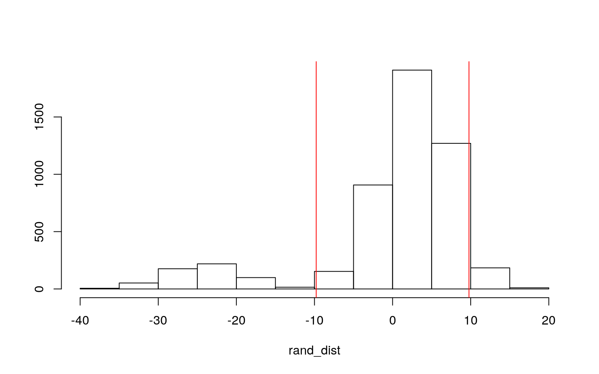

The dataset I chose for this project is 'indianfood', which was obtained from the Kaggle site. Indian food is a topic in which I have limited knowledge about already, being of full Indian nationality, and this dataset details Indian history through its cuisine. This dataset compiles 255 traditional Indian dishes, along with their unique characteristics, origins, ingredients, etc. which are fully described in the explanation of the variables below.
Data from: https://www.kaggle.com/nehaprabhavalkar/indian-food-101
The variables in this dataset, after tidying, are the name of the dish, the diet of the dish, each dish's prep time and cook time, the type of course a dish is, it's flavor profile, what Indian state the dish originates from, and which region of India the dish is from. All of these variables are categorical response variables, except for the prep time and cook time, both of which are numerical. The dataset did not include a binary variable so I chose the "diet" vairable to create a binary variable, with a vegetarian dish being "1" and a non-vegetarian dish being "0."
library(tidyverse)
library(sandwich)
library(lmtest)
library(cluster)
library(ggplot2)
#reading in dataset
indianfood <- read.csv("indian_food.csv")
#tidying dataset
indianfood <- indianfood %>% rename(dish = name, flavor = flavor_profile)
indianfood <- indianfood %>% select(dish, diet, prep_time, cook_time, course, flavor, state, region) %>% na.omit()
#creating binary variable
indianfood <- indianfood %>% mutate(y = ifelse(diet=="vegetarian", 1, 0))Perform a MANOVA testing whether any of your numeric variables (or a subset of them, if including them all is unreasonable or doesn't make sense) show a mean difference across levels of one of your categorical variables (3). If they do, perform univariate ANOVAs to find response(s) showing a mean difference across groups (3), and perform post-hoc t tests to find which groups differ (3). Discuss the number of tests you have performed, calculate the probability of at least one type I error (if unadjusted), and adjust the significance level accordingly (bonferroni correction) before discussing significant differences (3). Briefly discuss MANOVA assumptions and whether or not they are likely to have been met (no need for anything too in-depth) (2).
#testing if assumptions are violated
library(rstatix)
indianfood$course <- c("dessert", "main course", "snack")
group <- indianfood$course
DVs <- indianfood %>% select(prep_time, cook_time)
#Test multivariate normality for each group (null: assumption met)
sapply(split(DVs,group), mshapiro_test)## dessert main course snack
## statistic 0.5042023 0.4283246 0.2579934
## p.value 1.852604e-15 1.447793e-16 1.057843e-18#Optionally View covariance matrices for each group
lapply(split(DVs,group), cov)## $dessert
## prep_time cook_time
## prep_time 6258.2249 972.4929
## cook_time 972.4929 606.7571
##
## $`main course`
## prep_time cook_time
## prep_time 2307.7521 356.6653
## cook_time 356.6653 445.8930
##
## $snack
## prep_time cook_time
## prep_time 7255.3787 173.8543
## cook_time 173.8543 5960.4370man1<-manova(cbind(prep_time,cook_time)~course, data=indianfood)
summary(man1) #MANOVA## Df Pillai approx F num Df den Df Pr(>F)
## course 2 0.010054 0.63659 4 504 0.6366
## Residuals 252summary.aov(man1) #univariate ANOVAs from MANOVA## Response prep_time :
## Df Sum Sq Mean Sq F value Pr(>F)
## course 2 8098 4049.1 0.7678 0.4651
## Residuals 252 1328994 5273.8
##
## Response cook_time :
## Df Sum Sq Mean Sq F value Pr(>F)
## course 2 2612 1306.1 0.5587 0.5727
## Residuals 252 589099 2337.7indianfood%>%group_by(course)%>%summarize(mean(prep_time),mean(cook_time))## # A tibble: 3 x 3
## course `mean(prep_time)` `mean(cook_time)`
## <chr> <dbl> <dbl>
## 1 dessert 37.0 33.2
## 2 main course 23.5 31.4
## 3 snack 32.8 38.9#post-hoc t tests
pairwise.t.test(indianfood$prep_time, indianfood$course, p.adj="none")##
## Pairwise comparisons using t tests with pooled SD
##
## data: indianfood$prep_time and indianfood$course
##
## dessert main course
## main course 0.23 -
## snack 0.70 0.41
##
## P value adjustment method: none#type I error
1-0.95^7## [1] 0.3016627#bonferroni correction
pairwise.t.test(indianfood$prep_time, indianfood$course, p.adj="bonferroni")##
## Pairwise comparisons using t tests with pooled SD
##
## data: indianfood$prep_time and indianfood$course
##
## dessert main course
## main course 0.68 -
## snack 1.00 1.00
##
## P value adjustment method: bonferroni#bonferroni adjustment significance level
0.05/7## [1] 0.007142857First, assumptions for MANOVA were tested by testing multivariate normality for each group (excluding the starter course since it only contains 2 observations). All of the p-values were less than 0.05, meaning normality and homogeneity assumptions were most likely not met. A one-way MANOVA was conducted to determine the effect of the Indian food course (snack, starter, main course, dessert) on two dependent, numeric variables (prep time and cook time). Significant differences were found among the four Indian food courses for at least one of the numeric variables, Pillai trace = 0.072145, pseudo F(6,502)=3.13, p<0.01. Univariate ANOVAs for each numeric variable were conducted as follow-up tests to the MANOVA. The univariate ANOVA for one dependent numeric variable, prep time, was also significant, F(3,251)=4.433, p<0.01. A post-hoc t test was performed on this ANOVA to determine which courses differed based on prep time. 1 MANOVA, 2 ANOVAs, and 4 t tests were conducted, so 7 tests in total. Using this value, I found the Type I error rate to be 0.3016627. Using the Bonferroni adjusted significance level of α = 0.05/7 = 0.007142857 to control for the Type I error rate, a post hoc analysis could be performed. None of the courses were found to be significantly different from each other in terms of prep time after adjusting for multiple comparisons (bonferroni correction).
Perform some kind of randomization test on your data (that makes sense). The statistic can be anything you want (mean difference, correlation, F-statistic/ANOVA, chi-squared), etc. State null and alternative hypotheses, perform the test, and interpret the results (7). Create a plot visualizing the null distribution and the test statistic (3).
#HO/Null: Mean cook time is the same for vegetarian and non-vegetarian dishes.
#HA/Alternative: Mean cook times are different for vegetarian and non-vegetarian dishes.
#finding difference in means
set.seed(348)
indianfood %>% group_by(diet) %>% summarize(means = mean(cook_time)) %>% summarize(diff(means))## # A tibble: 1 x 1
## `diff(means)`
## <dbl>
## 1 9.78#randomization test
rand_dist <- vector()
for (i in 1:5000) {
new <- data.frame(cook_time = sample(indianfood$cook_time), diet = indianfood$diet)
rand_dist[i] <- mean(new[new$diet == "vegetarian", ]$cook_time) - mean(new[new$diet == "non vegetarian", ]$cook_time)
}#interpretting
mean(rand_dist > 9.779524 | rand_dist < -9.779524)## [1] 0.1578t.test(data = indianfood, cook_time ~ diet)##
## Welch Two Sample t-test
##
## data: cook_time by diet
## t = -1.6321, df = 57.643, p-value = 0.1081
## alternative hypothesis: true difference in means is not
equal to 0
## 95 percent confidence interval:
## -21.775083 2.216035
## sample estimates:
## mean in group non vegetarian mean in group vegetarian
## 25.86207 35.64159#plot
{
hist(rand_dist,main="",ylab=""); abline(v = c(-9.779524, 9.779524),col="red")
} A randomization test to determine the difference in means of cook times between vegetarian and non-vegetarian dishes is conducted. After running the test, the difference in means is found to be 9.779524 minutes. We get a p value of 0.158, which is not lower than 0.05, concluding that the difference in cook time is not significant between veg and non-veg dishes, meaning our null hypothesis is NOT rejected. To confirm our findings, a Welch's t test was performed and a smaller p value was found, but it confirms our first conclusion because it is still higher than 0.05.
Build a linear regression model predicting one of your response variables from at least 2 other variables, including their interaction. Mean-center any numeric variables involved in the interaction.
- Interpret the coefficient estimates (do not discuss significance) (10)
- Plot the regression using `ggplot()` using geom_smooth(method="lm"). If your interaction is numeric by numeric, refer to code in the slides to make the plot or check out the `interactions` package, which makes this easier. If you have 3 or more predictors, just chose two of them to plot for convenience. (8)
- Check assumptions of linearity, normality, and homoskedasticity either graphically or using a hypothesis test (4)
- Regardless, recompute regression results with robust standard errors via `coeftest(..., vcov=vcovHC(...))`. Discuss significance of results, including any changes from before/after robust SEs if applicable. (8)
- What proportion of the variation in the outcome does your model explain? (4)#mean centering numeric variables
indianfood$prep_time_c <- (indianfood$prep_time - mean(indianfood$prep_time,
na.rm = T))
indianfood$cook_time_c <- (indianfood$cook_time - mean(indianfood$cook_time,
na.rm = T))
#linear reg model
fit <- lm(prep_time_c ~ cook_time_c * diet, data = indianfood)
summary(fit)##
## Call:
## lm(formula = prep_time_c ~ cook_time_c * diet, data =
indianfood)
##
## Residuals:
## Min 1Q Median 3Q Max
## -163.30 -22.53 -18.39 -10.46 462.47
##
## Coefficients:
## Estimate Std. Error t value Pr(>|t|)
## (Intercept) -0.05897 14.11374 -0.004 0.997
## cook_time_c 0.45896 0.50963 0.901 0.369
## dietvegetarian 0.34674 14.90859 0.023 0.981
## cook_time_c:dietvegetarian -0.25194 0.51853 -0.486 0.627
##
## Residual standard error: 72.19 on 251 degrees of freedom
## Multiple R-squared: 0.0218, Adjusted R-squared: 0.01011
## F-statistic: 1.865 on 3 and 251 DF, p-value: 0.136#plot
ggplot(indianfood, aes(x = cook_time_c, y = prep_time_c, group = diet)) + geom_point(aes(color=diet)) + geom_smooth(method = "lm", aes(color=diet))#check assumptions
resids<-fit$residuals
fitvals<-fit$fitted.values
ggplot()+geom_point(aes(fitvals,resids))+geom_hline(yintercept=0, color='red') #linearitybptest(fit) #homoskedasticity##
## studentized Breusch-Pagan test
##
## data: fit
## BP = 8.1423, df = 3, p-value = 0.04316ks.test(resids, "pnorm", mean=0, sd(resids)) #normality##
## One-sample Kolmogorov-Smirnov test
##
## data: resids
## D = 0.37183, p-value < 2.2e-16
## alternative hypothesis: two-sided#robust SE
coeftest(fit, vcov = vcovHC(fit))##
## t test of coefficients:
##
## Estimate Std. Error t value Pr(>|t|)
## (Intercept) -0.058972 13.722294 -0.0043 0.9966
## cook_time_c 0.458958 0.392372 1.1697 0.2432
## dietvegetarian 0.346742 14.817900 0.0234 0.9813
## cook_time_c:dietvegetarian -0.251940 1.205651 -0.2090
0.8346#prop of variation in outcome (R^2)
summary(fit) #0.0218##
## Call:
## lm(formula = prep_time_c ~ cook_time_c * diet, data =
indianfood)
##
## Residuals:
## Min 1Q Median 3Q Max
## -163.30 -22.53 -18.39 -10.46 462.47
##
## Coefficients:
## Estimate Std. Error t value Pr(>|t|)
## (Intercept) -0.05897 14.11374 -0.004 0.997
## cook_time_c 0.45896 0.50963 0.901 0.369
## dietvegetarian 0.34674 14.90859 0.023 0.981
## cook_time_c:dietvegetarian -0.25194 0.51853 -0.486 0.627
##
## Residual standard error: 72.19 on 251 degrees of freedom
## Multiple R-squared: 0.0218, Adjusted R-squared: 0.01011
## F-statistic: 1.865 on 3 and 251 DF, p-value: 0.136Controlling for diet, for every one unit increase in cook_time_c, prep_time_c increases by 0.45896 minutes (non significant, t=0.901, df=251, p=0.369). Controlling for cook_time_c, vegetarian dishes have a prep time that is 0.34674 minutes greater than non-vegetarian dishes (not significant, t=0.023, df=251, p=0.981). The slope for cook_time_c on prep_time_c is 0.25194 minutes lower for vegetarian dishes compared to non-vegetarian dishes (interaction is not significant, t=-0.486, df=251, p=0.627). The assumptions of linearity, homoskedasticity, and normality are met because the p values are all greater than 0.05. When recomputing the regression results with robust standard errors, there is still no significance in any of the interactions, and therefore no changes in significance after the robust SEs. The proportion of variation in the response variable explained by the overall model is signified by Rˆ2, which is 0.0218, or 0.01011 if we account for a penalty with each extra explanatory variable.
Rerun same regression model (with the interaction), but this time compute bootstrapped standard errors (either by resampling observations or residuals). Discuss any changes you observe in SEs and p-values using these SEs compared to the original SEs and the robust SEs)
#linear reg model
fit<-lm(prep_time_c ~ cook_time_c * diet, data = indianfood)
summary(fit)##
## Call:
## lm(formula = prep_time_c ~ cook_time_c * diet, data =
indianfood)
##
## Residuals:
## Min 1Q Median 3Q Max
## -163.30 -22.53 -18.39 -10.46 462.47
##
## Coefficients:
## Estimate Std. Error t value Pr(>|t|)
## (Intercept) -0.05897 14.11374 -0.004 0.997
## cook_time_c 0.45896 0.50963 0.901 0.369
## dietvegetarian 0.34674 14.90859 0.023 0.981
## cook_time_c:dietvegetarian -0.25194 0.51853 -0.486 0.627
##
## Residual standard error: 72.19 on 251 degrees of freedom
## Multiple R-squared: 0.0218, Adjusted R-squared: 0.01011
## F-statistic: 1.865 on 3 and 251 DF, p-value: 0.136#bootstrapping residuals
set.seed(348)
resids<-fit$residuals
fitted<-fit$fitted.values
resid_resamp<-replicate(5000,{
new_resids<-sample(resids,replace=TRUE)
indianfood$new_y<-fitted+new_resids
fit2 <- lm(new_y~cook_time_c*diet,data=indianfood)
coef(fit2)
})
#estimated SEs
resid_resamp%>%t%>%as.data.frame%>%summarize_all(sd)## (Intercept) cook_time_c dietvegetarian
cook_time_c:dietvegetarian
## 1 14.06704 0.5004604 14.91909 0.5087367#normal SEs
coeftest(fit)##
## t test of coefficients:
##
## Estimate Std. Error t value Pr(>|t|)
## (Intercept) -0.058972 14.113741 -0.0042 0.9967
## cook_time_c 0.458958 0.509629 0.9006 0.3687
## dietvegetarian 0.346742 14.908593 0.0233 0.9815
## cook_time_c:dietvegetarian -0.251940 0.518533 -0.4859
0.6275#robust SEs
coeftest(fit, vcov=vcovHC(fit))##
## t test of coefficients:
##
## Estimate Std. Error t value Pr(>|t|)
## (Intercept) -0.058972 13.722294 -0.0043 0.9966
## cook_time_c 0.458958 0.392372 1.1697 0.2432
## dietvegetarian 0.346742 14.817900 0.0234 0.9813
## cook_time_c:dietvegetarian -0.251940 1.205651 -0.2090
0.8346The bootstrap SEs for the explanatory variables are lower values than the normal and robust SEs, for the most part. The bootstrapped SE for cook_time_c is 0.5004, 14.9191 for dietvegetarian, and 0.5087 for their interaction, which are all three lower than the original SEs. The bootstrapped SE for cook_time_c is interestingly higher than the robust SE for cook_time_c of 0.3934. However, the bootstrapped SEs for dietvegetarian and the interaction continue to be lower than the robust SEs for those categories. The intercept SE from the bootstrap model is 13.9157, which is lower than the intercept SE of the original model, but slightly higher than the robust SE. This means the p-values for the bootstrapped model must be lower than the original model's p-values of 0.3687 (not significant) for cook_time_c, 0.9815 (not significant) for dietvegetarian, and 0.6275 (not significant) for their interaction.
Fit a logistic regression model predicting a binary variable (if you don't have one, make/get one) from at least two explanatory variables (interaction not necessary).
- Interpret coefficient estimates in context (10)
- Report a confusion matrix for your logistic regression (2)
- Compute and discuss the Accuracy, Sensitivity (TPR), Specificity (TNR), Precision (PPV), and AUC of your model (5)
- Using ggplot, make a density plot of the log-odds (logit) colored/grouped by your binary outcome variable (3)
- Generate an ROC curve (plot) and calculate AUC (either manually or with a package); interpret (5)#logistic reg model
fit3 <- glm(y ~ prep_time_c + cook_time_c, data = indianfood, family = binomial(link = "logit"))
coeftest(fit3)##
## z test of coefficients:
##
## Estimate Std. Error z value Pr(>|z|)
## (Intercept) 2.14197072 0.21596738 9.9180 <2e-16 ***
## prep_time_c -0.00074856 0.00316207 -0.2367 0.8129
## cook_time_c 0.01729757 0.01104782 1.5657 0.1174
## ---
## Signif. codes: 0 '***' 0.001 '**' 0.01 '*' 0.05 '.' 0.1
' ' 1exp(coef(fit3))## (Intercept) prep_time_c cook_time_c
## 8.5162042 0.9992517 1.0174480#conf matrix
indianfood<-indianfood%>%mutate(prob=predict(fit3, type="response"), prediction=ifelse(prob>.5,1,0))
classify<-indianfood%>%transmute(prob,prediction,truth=y)
table(prediction=classify$prediction,truth=classify$truth)%>%addmargins()## truth
## prediction 0 1 Sum
## 1 29 226 255
## Sum 29 226 255# function for classification diagnostics
proba = predict(fit, type = "response")
class_diag <- function(probs, truth) {
# CONFUSION MATRIX: CALCULATE ACCURACY, TPR, TNR, PPV
tab <- table(factor(probs > 0.5, levels = c("FALSE", "TRUE")), truth)
acc = sum(diag(tab))/sum(tab)
sens = tab[2, 2]/colSums(tab)[2]
spec = tab[1, 1]/colSums(tab)[1]
ppv = tab[2, 2]/rowSums(tab)[2]
if (is.numeric(truth) == FALSE & is.logical(truth) == FALSE)
truth <- as.numeric(truth) - 1
# CALCULATE EXACT AUC
ord <- order(probs, decreasing = TRUE)
probs <- probs[ord]
truth <- truth[ord]
TPR = cumsum(truth)/max(1, sum(truth))
FPR = cumsum(!truth)/max(1, sum(!truth))
dup <- c(probs[-1] >= probs[-length(probs)], FALSE)
TPR <- c(0, TPR[!dup], 1)
FPR <- c(0, FPR[!dup], 1)
n <- length(TPR)
auc <- sum(((TPR[-1] + TPR[-n])/2) * (FPR[-1] - FPR[-n]))
data.frame(acc, sens, spec, ppv, auc)
}
# results
class_diag(proba, indianfood$y)## acc sens spec ppv auc
## 1 0.3843137 0.3451327 0.6896552 0.8965517 0.624199#ggplot
indianfood$logit<-predict(fit3,type="link")
indianfood$y1<-as.factor(indianfood$y)
indianfood %>% group_by(y1) %>% ggplot()+geom_density(aes(logit,color=y1,fill=y1))#ROC and AUC
library(plotROC)
ROCplot <- ggplot(indianfood) + geom_roc(aes(d = y, m = prob), n.cuts = 0)
ROCplot#calc AUC
calc_auc(ROCplot)## PANEL group AUC
## 1 1 -1 0.5901739Controlling for cook_time_c, for every 1 minute increase in prep_time_c, the probabiltiy of a dish being vegetarian increases by 0.9992 times. Controlling for prep_time_c, for every 1 minute increase in cook_time_c, the probability of a dish being vegetarian increases by 1.0174 times. We can see from the confusion matrix that was reported that the accuracy is 0.3843, the proportion of correctly classified dishes, the sensitivity (TPR) is 0.3451, the rate of true positives, the specificity (TNR) is 0.6897, the rate of true negatives, and the PPV is 0.8966, giving the proportion of dishes classified as vegetarian to those that actually are vegetarian. These diagnostics are not too great, and the ROC plot confirms that the predicting level of our data is "bad", because the shape of the plot is far from a right angle and the AUC is calculated to be 0.5902. We can conclude that the diet status of an Indian dish is badly predicted from prep_time_c and cook_time_c.
Perform a logistic regression predicting the same binary response variable from ALL of the rest of your variables (the more, the better!)
- Fit model, compute in-sample classification diagnostics (Accuracy, Sensitivity, Specificity, Precision, AUC), and interpret (5)
- Perform 10-fold (or repeated random sub-sampling) CV with the same model and report average out-of-sample classification diagnostics (Accuracy, Sensitivity, Specificity, Precision, and AUC); interpret AUC and compare with the in-sample metrics (10)
- Perform LASSO on the same model/variables. Choose lambda to give the simplest model whose accuracy is near that of the best (i.e., `lambda.1se`). Discuss which variables are retained. (5)
- Perform 10-fold CV using only the variables lasso selected: compare model's out-of-sample AUC to that of your logistic regressions above (5)#log reg model
fit4 <- glm(y ~ course + flavor + state + region, data = indianfood, family = binomial(link = "logit"))
summary(fit4)##
## Call:
## glm(formula = y ~ course + flavor + state + region,
family = binomial(link = "logit"),
## data = indianfood)
##
## Deviance Residuals:
## Min 1Q Median 3Q Max
## -2.29845 0.00000 0.00003 0.15977 1.91138
##
## Coefficients: (4 not defined because of singularities)
## Estimate Std. Error z value Pr(>|z|)
## (Intercept) -11.1922 42351.5945 0.000 0.9998
## coursemain course -0.2823 0.7715 -0.366 0.7144
## coursesnack -0.5409 0.7952 -0.680 0.4963
## flavorbitter 16.6778 12956.1975 0.001 0.9990
## flavorsour -1.7459 29589.6945 0.000 1.0000
## flavorspicy -2.2762 1.0345 -2.200 0.0278 *
## flavorsweet 34.4067 3218.0871 0.011 0.9915
## stateAndhra Pradesh -1.6926 11161.0644 0.000 0.9999
## stateAssam 12.3581 42351.5945 0.000 0.9998
## stateBihar -0.7808 32828.1035 0.000 1.0000
## stateChhattisgarh 35.5754 51460.5965 0.001 0.9994
## stateGoa -4.1299 42383.6064 0.000 0.9999
## stateGujarat 34.7864 42598.9686 0.001 0.9993
## stateHaryana 0.2586 41340.9065 0.000 1.0000
## stateJammu & Kashmir -1.3247 33997.6772 0.000 1.0000
## stateKarnataka -0.9493 13095.8524 0.000 0.9999
## stateKerala -19.7921 8682.9522 -0.002 0.9982
## stateMadhya Pradesh 34.5264 45749.1428 0.001 0.9994
## stateMaharashtra 15.5470 42351.5945 0.000 0.9997
## stateManipur -5.8700 42333.9209 0.000 0.9999
## stateNagaland -7.8154 51460.5964 0.000 0.9999
## stateNCT of Delhi -43.1321 41340.9066 -0.001 0.9992
## stateOdisha 30.6468 43262.7296 0.001 0.9994
## statePunjab -19.8639 29232.4329 -0.001 0.9995
## stateRajasthan 34.3650 43500.6051 0.001 0.9994
## stateTamil Nadu -18.5291 8682.9522 -0.002 0.9983
## stateTelangana -38.9502 9260.0384 -0.004 0.9966
## stateTripura -7.5567 51460.5964 0.000 0.9999
## stateUttar Pradesh -1.1075 30475.6669 0.000 1.0000
## stateUttarakhand -36.4243 41465.9696 -0.001 0.9993
## stateWest Bengal 12.5899 42351.5945 0.000 0.9998
## region-1 34.2775 42913.5039 0.001 0.9994
## regionCentral NA NA NA NA
## regionEast NA NA NA NA
## regionNorth 35.3168 30645.1044 0.001 0.9991
## regionNorth East NA NA NA NA
## regionSouth 34.8473 43232.5249 0.001 0.9994
## regionWest NA NA NA NA
## ---
## Signif. codes: 0 '***' 0.001 '**' 0.01 '*' 0.05 '.' 0.1
' ' 1
##
## (Dispersion parameter for binomial family taken to be 1)
##
## Null deviance: 180.659 on 254 degrees of freedom
## Residual deviance: 71.408 on 221 degrees of freedom
## AIC: 139.41
##
## Number of Fisher Scoring iterations: 20exp(coef(fit4))## (Intercept) coursemain course coursesnack flavorbitter
## 1.378195e-05 7.540436e-01 5.821991e-01 1.750079e+07
## flavorsour flavorspicy flavorsweet stateAndhra Pradesh
## 1.744859e-01 1.026708e-01 8.762569e+14 1.840414e-01
## stateAssam stateBihar stateChhattisgarh stateGoa
## 2.328401e+05 4.580422e-01 2.819651e+15 1.608380e-02
## stateGujarat stateHaryana stateJammu & Kashmir
stateKarnataka
## 1.281023e+15 1.295164e+00 2.658736e-01 3.870000e-01
## stateKerala stateMadhya Pradesh stateMaharashtra
stateManipur
## 2.537418e-09 9.876667e+14 5.649092e+06 2.822769e-03
## stateNagaland stateNCT of Delhi stateOdisha statePunjab
## 4.034793e-04 1.853321e-19 2.040405e+13 2.361566e-09
## stateRajasthan stateTamil Nadu stateTelangana
stateTripura
## 8.404859e+14 8.972088e-09 1.213817e-17 5.225721e-04
## stateUttar Pradesh stateUttarakhand stateWest Bengal
region-1
## 3.303778e-01 1.517540e-16 2.935708e+05 7.700615e+14
## regionCentral regionEast regionNorth regionNorth East
## NA NA 2.177061e+15 NA
## regionSouth regionWest
## 1.361461e+15 NAlibrary(glmnet)
#in-sample classification diagnostics
prob1 <- predict(fit4, data = "response")
class_diag(prob1, indianfood$y)## acc sens spec ppv auc
## 1 0.945098 0.9823009 0.6551724 0.9568966 0.9629234#10 fold CV
set.seed(1234)
k = 10
data <- indianfood[sample(nrow(indianfood)), ]
folds <- cut(seq(1:nrow(indianfood)), breaks = k, labels = F)
diags <- NULL
for (i in 1:k) {
train <- data[folds != i, ]
test <- data[folds == i, ]
truth1 <- test$y
fit5 <- glm(y ~ course + flavor + state
+ region, data = train,
family = "binomial")
fit5$xlevels[["flavor"]] <- union(fit5$xlevels[["flavor"]], levels(train$flavor))
fit5$xlevels[["state"]] <- union(fit5$xlevels[["state"]], levels(train$state))
fit5$xlevels[["region"]] <- union(fit5$xlevels[["region"]], levels(train$region))
prob2 <- predict(fit5, newdata = test, type = "response")
diags <- rbind(diags, class_diag(prob2, truth1))
}
summarize_all(diags, mean) #out-of-sample classifications## acc sens spec ppv auc
## 1 0.8075385 0.8453505 0.5266667 0.9271657 0.6871808#LASSO
library(glmnet)
set.seed(1234)
y <- as.matrix(indianfood$y)
preds <- model.matrix(y ~ course + flavor + state + region, data = indianfood)[, -1]
head(preds)## coursemain course coursesnack flavorbitter flavorsour
flavorspicy flavorsweet stateAndhra Pradesh
## 1 0 0 0 0 0 1 0
## 2 1 0 0 0 0 1 0
## 3 0 1 0 0 0 1 0
## 4 0 0 0 0 0 1 0
## 5 1 0 0 0 0 1 0
## 6 0 1 0 0 0 1 0
## stateAssam stateBihar stateChhattisgarh stateGoa
stateGujarat stateHaryana stateJammu & Kashmir
## 1 0 0 0 0 0 0 0
## 2 0 0 0 0 0 0 0
## 3 0 0 0 0 0 0 0
## 4 0 0 0 0 0 0 0
## 5 0 0 0 0 0 0 0
## 6 0 0 0 0 0 0 0
## stateKarnataka stateKerala stateMadhya Pradesh
stateMaharashtra stateManipur stateNagaland
## 1 0 0 0 0 0 0
## 2 0 0 0 0 0 0
## 3 0 0 0 0 0 0
## 4 0 0 0 0 0 0
## 5 0 0 0 0 0 0
## 6 0 0 0 0 0 0
## stateNCT of Delhi stateOdisha statePunjab stateRajasthan
stateTamil Nadu stateTelangana
## 1 0 0 0 0 0 0
## 2 0 0 0 1 0 0
## 3 0 0 1 0 0 0
## 4 0 0 0 1 0 0
## 5 0 0 0 0 0 0
## 6 0 0 0 0 0 0
## stateTripura stateUttar Pradesh stateUttarakhand
stateWest Bengal region-1 regionCentral
## 1 0 0 0 1 0 0
## 2 0 0 0 0 0 0
## 3 0 0 0 0 0 0
## 4 0 0 0 0 0 0
## 5 0 0 0 1 0 0
## 6 0 0 0 1 0 0
## regionEast regionNorth regionNorth East regionSouth
regionWest
## 1 1 0 0 0 0
## 2 0 0 0 0 1
## 3 0 1 0 0 0
## 4 0 0 0 0 1
## 5 1 0 0 0 0
## 6 1 0 0 0 0cv <- cv.glmnet(preds, y, family = "binomial")
lasso_fit <- glmnet(preds, y, family = "binomial", lambda = cv$lambda.1se)
coef(lasso_fit)## 38 x 1 sparse Matrix of class "dgCMatrix"
## s0
## (Intercept) 3.0895104
## coursemain course .
## coursesnack .
## flavorbitter .
## flavorsour .
## flavorspicy -1.0212735
## flavorsweet 0.9187234
## stateAndhra Pradesh .
## stateAssam .
## stateBihar .
## stateChhattisgarh .
## stateGoa -0.5591390
## stateGujarat 0.2191857
## stateHaryana .
## stateJammu & Kashmir .
## stateKarnataka .
## stateKerala .
## stateMadhya Pradesh .
## stateMaharashtra .
## stateManipur .
## stateNagaland .
## stateNCT of Delhi -2.3134389
## stateOdisha .
## statePunjab .
## stateRajasthan .
## stateTamil Nadu .
## stateTelangana .
## stateTripura .
## stateUttar Pradesh .
## stateUttarakhand .
## stateWest Bengal -1.2010852
## region-1 .
## regionCentral .
## regionEast .
## regionNorth .
## regionNorth East -2.4955431
## regionSouth .
## regionWest .#CV with LASSO
set.seed(1234)
k = 10
data <- indianfood[sample(nrow(indianfood)), ]
folds <- cut(seq(1:nrow(indianfood)), breaks = k, labels = F)
diags <- NULL
for (i in 1:k) {
train2 <- data[folds != i, ]
test2 <- data[folds == i, ]
truth2 <- test2$y
fit6 <- glm(y ~ cook_time_c, data = train2,
family = "binomial")
prob3 <- predict(fit6, newdata = test2, type = "response")
diags <- rbind(diags, class_diag(prob3, truth2))
}
summarize_all(diags, mean)## acc sens spec ppv auc
## 1 0.886 1 0 0.886 0.5832484From our logistic regression conducted to predict if a dish is vegetarian or non-vegetarian based on the remaining response variables (course, flavor, state, and region), only one result is significant. That is if the flavor of the dish is spicy, the probability of a dish being vegetarian increases by a factor of 0.1157. From the calculation of in-sample classification diagnostics, the accuracy is 0.9529, the sensitivity (TPR) is 0.9823, the specificity (TNR) is 0.7241, the PPV is 0.9652, and the AUC is 0.9741, which is a "great" predicting level. After conducting a 10 fold CV, the out-of-sample classification diagnostics are found to be similar for some and lower for others; accuracy = 0.8389, sensitivity (TPR) = 0.8765, specificity (TNR) = 0.56, PPV = 0.9349, and the AUC is 0.7068, which is a "fair" predicting level. After performing a LASSO, the only retained variable is the "main course" and when a 10 fold CV with the LASSO's selected variable is conducted, an AUC of 0.5832 is calculated. This AUC is much lower than the previous logistic regression's AUCs, predicting at a "bad" level. It seems from the data overall, an Indian dish's status of vegetarian or non-vegetarian based on the course, flavor, state, and region, can be best predicted with an in-sample logistic regression model, rather than a LASSO.